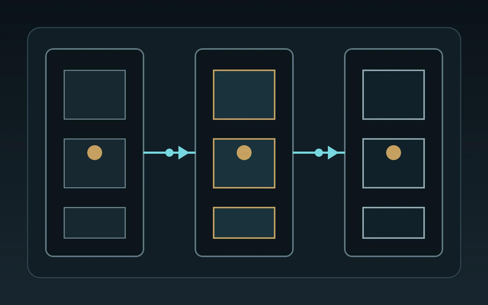

Первые этажи
АЛРОКС · СИАЛ · ТАТПРОФ
Входные группы, витражи, коммерческие помещения и рабочие объектовые задачи. Здесь важны понятная экономика, доступность профиля, ремонтопригодность и нормальная переработка.
Алюминий
Первые этажи, фасадная плоскость, премиальный частный сегмент и крупноформатная автоматика требуют разных систем. Мы выбираем не бренд ради бренда, а инженерную логику под объект.
Карта систем
Первые этажи
Входные группы, витражи, коммерческие помещения и рабочие объектовые задачи. Здесь важны понятная экономика, доступность профиля, ремонтопригодность и нормальная переработка.
Практичные фасадные решения
Оставляем как рабочую доступную полку для фасадов, оконно-дверных задач и объектов, где критичны сроки, наличие, бюджет и понятная логистика. Без романтики, но с пользой.
Отдельная философия
Выделяем как самостоятельную фасадную логику: сначала архитектурная сетка и функции оболочки, затем совместимые окна, двери, раздвижные конструкции, солнцезащита, вентиляция и автоматика.
Премиум и габарит
Reynaers и ALUPORT — для премиального частного сегмента, порталов и входных групп. Keller minimal windows — для крупноформатных минималистичных систем и 5-метровых сценариев после расчёта.
Фасадный фокус
Не подменяем проект перечнем профилей. Смотрим на оболочку целиком: ритм стоек и ригелей, прозрачные и непрозрачные поля, способы открывания, примыкания, эксплуатацию и управление.
Четыре семейства ниже — не рейтинг и не готовая спецификация, а разные отправные точки для проектирования.

Четыре сценария
Каждый сценарий привязан к официальной продуктовой странице; формулировки пересказаны и не заменяют расчёт или документацию для конкретного объекта.
Гибкая основа
Стоечно-ригельная система с лицевой шириной 50 мм для фасадов и светопрозрачных покрытий. Подходит как отправная платформа, когда важны варианты прижимных планок, крышек и системно проверяемые сочетания с открывающимися элементами.
Панорамная линия
Panorama Design для проектов, где нужна минимальная видимая ширина и системное решение цельностеклянного угла без вертикальной стойки. Совместимые элементы подбираются внутри подтверждённой конфигурации.
Открывание в ритме фасада
Concealed Vent объединяет несущую структуру и открывающуюся створку так, что снаружи фиксированные и открывающиеся поля читаются одинаково. Возможен сценарий управляемого проветривания совместимыми приводами.
Элементная сборка
Платформа для модульных элементных фасадов с высокой долей заводской готовности. В варианте CV верхнеподвесные или параллельно-отставные створки скрыты в несущей структуре при общей лицевой ширине 80 мм.
Интегрированная оболочка
Окна, двери, раздвижные элементы, солнцезащита, вентиляция и автоматика рассматриваются вместе, но применяются только в совместимых конфигурациях. Совпадения бренда недостаточно: проверяем системную документацию, нагрузки, управление, примыкания и доступ к обслуживанию.
Путь проектирования
Система появляется после архитектурной и инженерной постановки задачи — не раньше.

Фиксируем оси, этажность, прозрачные и непрозрачные поля.
Определяем открывание, проходы, вентиляцию, солнцезащиту и управление.
Сопоставляем задачу с FWS, Panorama Design или элементной платформой.
Проверяем допустимые сочетания, примыкания и маршруты кабелей.
Уточняем нагрузки, теплотехнику, стекло, крепления и водоотвод.
Закрепляем решения в документации, образце и объектных согласованиях.
Объектная проверка
Доступность профилей и комплектующих, возможность производства, сроки, расчётные характеристики, сертификация и соответствие местным нормам подтверждаются для страны, подрядчика и конкретного объекта. Финальная конфигурация определяется только после проверки актуальной технической документации и требований проекта.
Разобрать фасадную задачу